| Lv07_0001 |
|
あや |
不思議である。 |
| Lv07_0002 |
|
われわれ |
一人称の人代名詞。『我』の複数。わたくしたち。われら。 |
| Lv07_0003 |
|
けむ |
けむりが立つ。けむりがこもる。 |
| Lv07_0004 |
|
よ |
さしつかえない。適当である。 |
| Lv07_0005 |
 |
ひと |
数としての一。一個。単一なもの。それだけであること。 |
| Lv07_0006 |
|
おこ |
ひっそりしていたものを目立つ状態にする。衰えていたものを再び勢いづかせる。 |
| Lv07_0007 |
|
せい |
おさえとどめる。禁ずる。また、支配する。 |
| Lv07_0008 |
|
ほし |
晴れた夜空に点々と光って見える天体。 |
| Lv07_0009 |
|
ただ |
形や向きがまっすぐである。道理にかなっている。事実に合っている。 |
| Lv07_0010 |
|
とぼ |
十分でない。足りない。また、経済的に貧しい。 |
| Lv07_0011 |
|
つ |
別のものをひっつける。また、骨や木をつなぎ合わせる。 |
| Lv07_0012 |
|
のっと |
規準として従う。手本とする。 |
| Lv07_0013 |
|
あめ |
大気から水の粒が落下する天気のひとつ。また、その落下する水滴。 |
| Lv07_0014 |
|
そな |
そのことがいつあってもいいよう、前もって用意する。 |
| Lv07_0015 |
|
しょうもん |
仏語で、仏陀の教えを聞く者のこと。『<聲|しょう>』『<聞|もん>』を一字に合字したもの。 |
| Lv07_0016 |
|
かんが |
照らし合わせる。よく調べて誤りを正す。 |
| Lv07_0017 |
|
むな |
空虚である。内容がない。 |
| Lv07_0018 |
|
あや |
不思議な力がある。神秘的な感じがする。 |
| Lv07_0019 |
|
かなひ |
金属同士を打ち合わせたときの摩擦で起きる火花。 |
| Lv07_0020 |
|
くくわけな |
鳥が鳴く意とされる。 |
| Lv07_0021 |
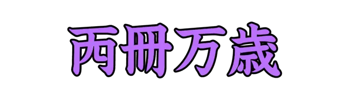 |
てんさくばんざい |
武周の武則天の治世に使用された元号。六九五年。 |
| Lv07_0022 |
|
もう |
『言う』の謙譲語。主として会話に用い、聞き手に対して使う。 |
| Lv07_0023 |
|
うしのあつもの |
牛を煮込んだ熱い汁物。 |
| Lv07_0024 |
|
なつ |
四季のひとつで、春と秋にはさまれた季節。 |
| Lv07_0025 |
|
まわ |
回転する。周囲に沿って進む。 |
| Lv07_0026 |
|
おした |
どっしりと立つ。また、相手の気持ちを考えず無理押しする。 |
| Lv07_0027 |
|
ぶりざーど |
極地に吹く、雪のごく強い嵐。 |
| Lv07_0028 |
|
いわくら |
古神道における岩に対する信仰のこと。また、その信仰の対象となる岩。 |
| Lv07_0029 |
|
ことごと |
大げさである。物々しい。 |
| Lv07_0030 |
|
おもしろ |
続けたり、見聞きしたりしたいと思うさま。興味を引かれる。 |
| Lv07_0031 |
|
はな |
追いはらう。追放する。 |
| Lv07_0032 |
|
ふえ |
東アジアの気鳴楽器。特に、<簫|しょう>を指す。 |
| Lv07_0033 |
|
しょうせい |
武周の武則天の治世に使用された元号。六九五年。 |
| Lv07_0034 |
|
じょ |
のぞく。取り去る。はらう。 |
| Lv07_0035 |
|
てんち |
天と地。天の神と地の神。また、宇宙、世界の全体。 |
| Lv07_0036 |
|
えんさい |
武周の武則天の治世に使用された元号。六九四年。 |
| Lv07_0037 |
|
そ |
しはじめる。はじめてする。 |
| Lv07_0038 |
|
ぽろにうむ |
原子番号84の元素。元素記号はPo。 |
| Lv07_0039 |
|
まぼろし |
実際にはないのに、あるように見えるもの。また、まもなく消えるはかないもの。 |
| Lv07_0040 |
|
うかがいみ |
ひそかに様子を見る。のぞく。詮索する。 |
| Lv07_0041 |
|
ば |
本来の姿、形を変えて別のものになる。 |
| Lv07_0042 |
|
ゆる |
さしつかえないと認める。赦免する。 |
| Lv07_0043 |
|
たか |
物が、地面などの基準になるところから、かなり上の位置にある。 |
| Lv07_0044 |
|
きす |
スズキ目キス科の魚。食用や、釣りの対象として人気が高い。 |
| Lv07_0045 |
|
はた |
はたはたと音が鳴り響く。 |
| Lv07_0046 |
|
ぐれーん |
ヤード・ポンド法における質量の最小単位。 |
| Lv07_0047 |
|
つぶさ |
細かくて、詳しいさま。詳細に。 |
| Lv07_0048 |
|
ゆめゆめ |
決して。断じて。 |
| Lv07_0049 |
|
あやつ |
帆船で、帆にうまく風を入れて航行する。 |
| Lv07_0050 |
|
こよみびらき |
新年に初めてこの年の暦を用い始めること。 |
| Lv07_0051 |
|
らじうむ |
原子番号88の元素。元素記号はRa。 |
| Lv07_0052 |
|
うらん |
原子番号92の元素。元素記号はU。 |
| Lv07_0053 |
|
せりうむ |
原子番号58の元素。元素記号はCe。 |
| Lv07_0054 |
|
からすみ |
ボラなどの卵巣を塩漬けし、塩抜き後、天日干しで乾燥させたもの。 |
| Lv07_0055 |
|
しゅうね |
執念深く思う。 |
| Lv07_0056 |
|
おとうと |
きょうだいのうち、年下の男性。 |
| Lv07_0057 |
|
かったー |
小型の船舶のひとつ。カッターボートなどの種類がある。 |
| Lv07_0058 |
|
おも |
ある物事について考えをもつ。考える。 |
| Lv07_0059 |
|
えだおろし |
下枝や枯れ枝を切り落とすこと。 |
| Lv07_0060 |
|
にち |
ねちねちと言いがかりをつける。 |
| Lv07_0061 |
|
じょうごむし |
動物的単細胞生物のひとつ。『漏斗虫』とも。 |
| Lv07_0062 |
|
そぞ |
心に落ち着きがなくなる。そわそわする。 |
| Lv07_0063 |
 |
おぼつかな |
物事の成り行きが疑わしい。うまくいきそうもない。 |
| Lv07_0064 |
|
いいかし |
米に熱を通して炊く。 |
| Lv07_0065 |
|
かなぐ |
荒々しく払いのける。また、引っ張りとる。 |
| Lv07_0066 |
|
おおつたのは |
ツタノハガイ科の貝。弥生時代、貝輪として穴を開け装飾品として使われたとされる。 |
| Lv07_0067 |
|
このごろ |
最近。ちかごろ。 |
| Lv07_0068 |
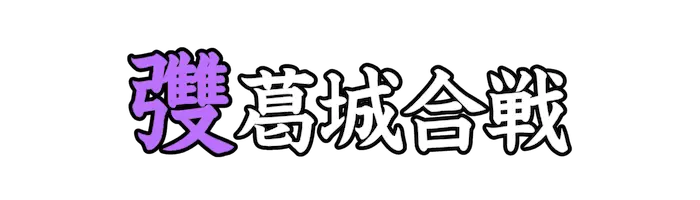 |
にちょうのゆみ |
歌舞伎、浄瑠璃の外題。 |
| Lv07_0069 |
|
なび |
他人の意志や威力などに従う。服従する。 |
| Lv07_0070 |
|
ころ |
立っているものを倒す。 |
| Lv07_0071 |
|
ざんぶと |
井戸に木を投げ入れ、水面を跳ねて水没するときのオノマトペ。 |
| Lv07_0072 |
|
ききがき |
自分が直接または間接に聞いた事を書きとめること。 |
| Lv07_0073 |
|
うまのかみはさみ |
馬の毛を調えるハサミ。 |
| Lv07_0074 |
|
えんがく |
仏語で、仏の教えによらず十二因縁を観じて理法を悟った者。 |
| Lv07_0075 |
|
おんす |
ヤード・ポンド法の質量の単位。 |
| Lv07_0076 |
|
きんたる |
メートル法の質量の単位。 |
| Lv07_0077 |
|
とらっく |
荷物の運搬を目的とした自動車。 |
| Lv07_0078 |
|
ぼんのう |
仏教で、心身を乱す心のはたらきをさして使われる語。 |
| Lv07_0079 |
|
たまご |
鳥などが産む、殻に包まれた球形のもの。また、見込みはあるが、まだ未熟なもの。 |
| Lv07_0080 |
|
おそれ |
悪いことが起こるのではないかという心配、懸念。 |
| Lv07_0081 |
|
ほ |
ある人や物を知って、その人や物が好きになって夢中になる。 |
| Lv07_0082 |
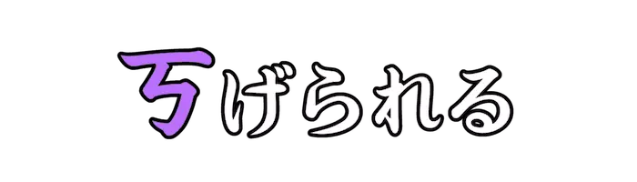 |
さまた |
蒸気が上昇しようとして、阻害される。 |
| Lv07_0083 |
|
いたみうれ |
心が痛んだり、悩み悲しむ。 |
| Lv07_0084 |
|
つきすす |
勢いよくどんどん進む。 |
| Lv07_0085 |
|
かぬち |
金属を打ち鍛えること。また、その人。 |
| Lv07_0086 |
|
みめよ |
顔だちが美しい。器量がいい。 |
| Lv07_0087 |
|
おが |
神仏などに、合掌をして祈る。 |
| Lv07_0088 |
|
おお |
数や量がたくさんある。物事がたびたび起こる。 |
| Lv07_0089 |
|
お |
年をとる。老齢になる。 |
| Lv07_0090 |
|
な |
物事が存在しないこと。持っていないこと。 |
| Lv07_0091 |
|
ただよ |
水面や空中に浮いて揺れ動く。また、当てもなく歩き回る。 |
| Lv07_0092 |
|
どいもい |
ベトナム共産党第六回党大会で出された、経済や社会思想の新たな転換を目指す標語。 |
| Lv07_0093 |
|
あおざい |
正装として着用するベトナムの民族服。 |
| Lv07_0094 |
|
ぶんぼーふえ |
ベトナム中部の都市、フエ名物の米粉の麺と牛肉を用いた料理。 |
| Lv07_0095 |
|
のんらー |
ベトナム全土で用いられる、ラタニアの木の葉でできた伝統的な円錐形の葉笠。 |
| Lv07_0096 |
|
ふぉー |
ベトナム料理で用いられる、平たいライスヌードル。 |
| Lv07_0097 |
|
ちょんかい |
ベトナムの伝統的な大太鼓のひとつ。 |
| Lv07_0098 |
|
かいんちゅあ |
ベトナム南部のメコンデルタ地域で見られる特色あるスープ。 |
| Lv07_0099 |
|
ぬおっくちゃむ |
ベトナムで使用される万能つけたれ。さまざまな料理に添えられる。 |
| Lv07_0100 |
|
ばっちゃん |
ベトナムに位置するハノイ、ザーラム県のバッチャン村で産出される陶磁器。 |
| Lv07_0101 |
|
ちゅはん |
『漢字』をベトナム語で表したもの。 |
| Lv07_0102 |
|
がんねん |
その年号に改まった、また比喩的に、物事の大きな変わり目の最初の年。 |
| Lv07_0103 |
|
さいしょ |
唐の睿宗李旦の治世に使用された元号。六八九年から六九十年。 |
| Lv07_0104 |
|
ただ |
形や向きがまっすぐである。道理にかなっている。事実に合っている。 |
| Lv07_0105 |
|
ますのすけ |
サケ目サケ科の魚の通称。『キングサーモン』とも。 |
| Lv07_0106 |
|
うるめいわし |
ニシン目ウルメイワシ科の魚。目が潤んでいるように見えることから。 |
| Lv07_0107 |
|
たか |
タカ目タカ科の鳥の総称。また、ハヤブサ目ハヤブサ科の鳥の総称。 |
| Lv07_0108 |
|
てらつつき |
キツツキの別称。 |
| Lv07_0109 |
|
さけのはえ |
ハエの幼虫の俗称。『<蠁子|さし>』とも。 |
| Lv07_0110 |
|
ひとのこ |
人間の飼育するカイコ。家蚕。 |
| Lv07_0111 |
|
さわら |
サバ目サバ科の魚。大きく細長い体をもち、食用に漁獲される。 |
| Lv07_0112 |
|
からす |
スズメ目カラス科の鳥の総称。鳥類の中では知能が非常に高いとされる。 |
| Lv07_0113 |
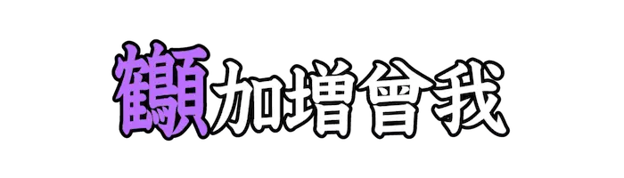 |
まなずる |
歌舞伎、浄瑠璃の外題。 |
| Lv07_0114 |
|
しーぼーぎうむ |
原子番号106の元素。元素記号はSg。 |
| Lv07_0115 |
|
ふれろびうむ |
原子番号114の元素。元素記号はFl。 |
| Lv07_0116 |
|
にほにうむ |
原子番号113の元素。元素記号はNh。 |
| Lv07_0117 |
|
てねしん |
原子番号117の元素。元素記号はTs。 |
| Lv07_0118 |
|
みりあめーとる |
かつて使用されていた長さの単位。キロメートルの１０倍。 |
| Lv07_0119 |
|
せんちあーる |
メートル法の面積の単位。 |
| Lv07_0120 |
|
かしのき |
ブナ目ブナ科の常緑高木の一群の総称。常緑性で、葉の表面につやがある。 |
| Lv07_0121 |
 |
すずみむしろ |
ミミナグサの別称。 |
| Lv07_0122 |
|
きょ |
ご飯を入れるためのヤナギで作られた器。 |
| Lv07_0123 |
|
れい |
整数のひとつ。正でも負でもない実数。また、何も存在しないこと。 |
| Lv07_0124 |
 |
なくなく |
泣きながら。また、泣きたいほどつらい気持ちで。 |
| Lv07_0125 |
|
ほだ |
炉やかまどでたくたきぎ。 |
| Lv07_0126 |
|
い |
『インドリヤ[(根)]』を表す<通摩多|つうまた>のひとつ。『根』は、漢訳語で機能や能力などのこと。 |
| Lv07_0127 |
|
てつ |
言葉や口数が多いことを表す語とされる。 |
| Lv07_0128 |
|
なーん |
発酵後にタンドールで窯焼きされる、焼いて作られる平らなパンのひとつ。 |
| Lv07_0129 |
|
あした |
今日の次の日。また、『朝』の雅語的な言い方。 |
| Lv07_0130 |
|
こまごと |
こまごました、つまらない事。 |
| Lv07_0131 |
|
あさぼらけ |
太陽が地平線上にまだ昇っていないとき、空の薄明かりが朗らかに見える頃。 |
| Lv07_0132 |
|
ものいみ |
不浄を避けるため、定められた間は飲食や行為を慎み、心身を浄めること。 |
| Lv07_0133 |
|
せせらぎ |
浅瀬などを流れる水の音。小さな流れ。 |
| Lv07_0134 |
|
うまのりつづみ |
騎兵が馬の上で打ち鳴らす軍用の太鼓。『<鼙|せめつづみ>』とも。 |
| Lv07_0135 |
|
おとり |
獲物を捕らえようとするとき、誘い寄せるために使う同類の鳥。 |
| Lv07_0136 |
|
ことぶき |
長生きであること。 |
| Lv07_0137 |
 |
くるわ |
城やとりでの、周囲を土や石などで築き巡らしてある囲い。 |
| Lv07_0138 |
|
どんぶと |
井戸に石を投げ込むときのオノマトペ。 |
| Lv07_0139 |
|
おとがい |
下あご。下顎骨の先端部。 |
| Lv07_0140 |
|
ぼさつ |
『菩薩』を省略し、草冠のみを合わせた語。仏書などの書写に多く使われる。 |
| Lv07_0141 |
|
てづくり |
自分の手で作ること。手製のもの。 |
| Lv07_0142 |
|
ひながた |
実物をそのまま小さくかたどって作られたもの。 |
| Lv07_0143 |
|
とな |
地面の上で飛び上がること。 |
| Lv07_0144 |
|
くつのきびす |
履物の、かかとにあたる部分。 |
| Lv07_0145 |
|
おか |
小高くなった土地。山よりも低く、傾斜もなだらかなもの。 |
| Lv07_0146 |
|
くぼて |
神事のときに供え物を入れる容器。『<枚手|ひらで>』とも。 |
| Lv07_0147 |
|
あられ |
雲から降ってくる小さい氷の粒。また、それらが降る天気のこと。 |
| Lv07_0148 |
|
まちぎみ |
天皇の御前に仕える人を尊敬していう語。また、朝廷に仕えている<高官|こうかん>、<侍臣|じしん>の総称。 |
| Lv07_0149 |
|
あらがね |
山から掘り出したままの、まだ精錬されていない金属。 |
| Lv07_0150 |
|
こい |
離れている人や場所、また事物などに強く心を引かれるさま。 |
| Lv07_0151 |
|
いそ |
慌ただしい様子。せわしく。 |
| Lv07_0152 |
|
うま |
食物などの味がよい。おいしい。また、物事の運びが望むとおりである。 |
| Lv07_0153 |
|
かく |
物の陰になるなどして見えない状態になる。 |
| Lv07_0154 |
|
よろこ |
うれしいと思う。楽しく快い気持ちになる。 |
| Lv07_0155 |
|
もう |
利益があがる。もうけが得られる。また、思いがけない得をする。 |
| Lv07_0156 |
|
ふる |
細かく揺れ動く。震動する。 |
| Lv07_0157 |
|
ひと |
比べたとき、内容や状態に区別がない。同様である。 |
| Lv07_0158 |
|
うらな |
人の運勢、物事の吉凶、将来の成り行きを判断したり、予言すること。 |
| Lv07_0159 |
|
したる |
気持ちが落ち込んで陰鬱なさま。 |
| Lv07_0160 |
|
あら |
きめこまかくないさま。粗末なさま。 |
| Lv07_0161 |
|
たけ |
荒々しくふるまう。激しく荒れる。 |
| Lv07_0162 |
|
もと |
正しい道理からはずれる。また、常識や道理と食い違う。 |
| Lv07_0163 |
|
つ |
すぐそのあとに続く。引き続いて起こる。 |
| Lv07_0164 |
|
ぬ |
表面に水などがかかる。 |
| Lv07_0165 |
|
さ |
物の先を低くする。下方に移す。 |
| Lv07_0166 |
|
わか |
成長の過程で、まだ多くの年月を経ていない。 |
| Lv07_0167 |
|
かぐわ |
においがよい。香ばしい。 |
| Lv07_0168 |
|
よ |
物に登るために取りすがりつくようにして上がる。よじのぼる。 |
| Lv07_0169 |
|
ゆ |
ある方向に往復するように動く。また、不安定な状態になる。 |
| Lv07_0170 |
|
ひと |
過不足なく同じである様子。 |
| Lv07_0171 |
|
わきま |
物事の違いを見分ける。弁別する。 |
| Lv07_0172 |
|
くつがえりふ |
逆転され、地に伏する。屈服する。 |
| Lv07_0173 |
|
くじり |
えぐる。彫る。 |
| Lv07_0174 |
|
さかんにも |
勢いよく炎が立つ。 |
| Lv07_0175 |
|
はらば |
腹を地につけた状態で、手足で這いながら移動する。 |
| Lv07_0176 |
|
たばか |
計略をめぐらして、だます。 |
| Lv07_0177 |
|
くら |
光の量がすくない。光が遮られている。 |
| Lv07_0178 |
|
はな |
派手で美しいさま。また、盛んで人目をひくさま。 |
| Lv07_0179 |
|
かむ |
頭や顔などに、かんむりなどの覆うものを載せる。 |
| Lv07_0180 |
|
ひら |
教え導く。 |
| Lv07_0181 |
|
か |
欲求などを努力して抑える。また、努力して困難な状態を切り抜ける。 |
| Lv07_0182 |
|
いなが |
すわったままで。すぐに。また、何もせずに。 |
| Lv07_0183 |
|
かいそ |
けずり取る。けずる。 |
| Lv07_0184 |
|
い |
手紙などを中に納める。投函する。 |
| Lv07_0185 |
|
か |
一つのものや、ひとりの人が二つ以上のはたらきをする。 |
| Lv07_0186 |
|
くろ |
黒みがかっている。黒に近い色である。 |
| Lv07_0187 |
|
もう |
『言う』の丁寧語。主として会話に用い、聞き手に対して使う。 |
| Lv07_0188 |
|
み |
いっぱいにする。満たす。 |
| Lv07_0189 |
|
な |
ある行為をおこなう。また、なさる。したまう。 |
| Lv07_0190 |
|
あさ |
表面から底まで、入り口から奥までの距離が短い。深さが少ない。 |
| Lv07_0191 |
|
かわ |
喉に潤いがなくなり、水分が欲しくなる。 |
| Lv07_0192 |
|
なぞら |
ある物事を類似のものと比較して、仮にそれとみなす。擬する。 |
| Lv07_0193 |
|
どく |
ひどくののしる。ひどく悪口を言う。 |
| Lv07_0194 |
|
たの |
満ち足りていて、愉快な気持ちである。 |
| Lv07_0195 |
|
のっと |
手本をもとに形を写し取ることや、ある形に似せて作ること。 |
| Lv07_0196 |
|
し |
命がなくなる。息絶える。 |
| Lv07_0197 |
|
そ |
物の先を、とがるような形に切る。また、削るように取る。 |
| Lv07_0198 |
|
うずたか |
積み重なって高く盛り上がっている。 |
| Lv07_0199 |
|
がとん |
天下に背くこと。 |
| Lv07_0200 |
|
おもおも |
いかにも重そうなさま。ずっしり。 |
| Lv07_0201 |
|
ちょべんたいん |
ベトナムのホーチミン市に位置する、大規模な市場。『ベンタイン市場』とも。 |
| Lv07_0202 |
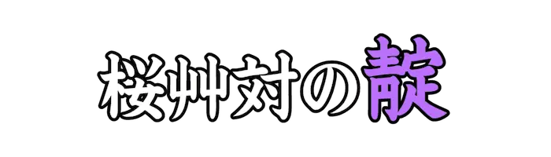 |
かがもん |
歌舞伎、浄瑠璃の外題。 |
| Lv07_0203 |
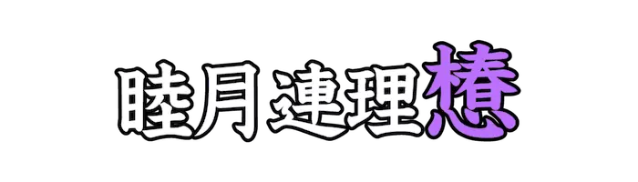 |
たまつばき |
歌舞伎、浄瑠璃の外題。 |
| Lv07_0204 |
|
たしな |
趣味。好み。また、芸事などの心得。 |
| Lv07_0205 |
|
ふさ |
気がはればれしない。鬱屈である。 |
| Lv07_0206 |
|
まめまめ |
まじめに、骨惜しみせずによくはたらく様子である。 |
| Lv07_0207 |
|
ほこのさき |
両刃の、長い柄のある武器の先端。 |
| Lv07_0208 |
|
もじきり |
丁字型の把手を回して穴を開ける錐。 |
| Lv07_0209 |
|
なり |
断定を示す助字。また、そのうえ。ふたたび。 |
| Lv07_0210 |
|
ぶんしょう |
いくつかの文を重ね、まとまった意志や感情を表現したもの。 |
| Lv07_0211 |
|
かたくみ |
エンジュの別名。 |
| Lv07_0212 |
|
もちつつじ |
ツツジ目ツツジ科の常緑低木。 |
| Lv07_0213 |
|
くまはじかみ |
バラ目バラ科の落葉小高木。ナナカマドの別名とされる。 |
| Lv07_0214 |
|
ねずこ |
マツ目ヒノキ科の常緑高木。クロベの別名。 |
| Lv07_0215 |
|
さるかき |
ユリ目ユリ科のつる性落葉低木。サルトリイバラの別名。 |
| Lv07_0216 |
|
ばいんみー |
ベトナムにおけるサンドイッチの呼称。また、広義のパンなどの総称。 |
| Lv07_0217 |
|
ちゃおとむ |
ベトナム中部のフエが発祥の、伝統的なベトナム料理。 |
| Lv07_0218 |
|
だんぐえっと |
ベトナムの民族楽器のひとつ。撥弦楽器に分類される。 |
| Lv07_0219 |
|
さくなぎ |
鳥の名前。シギの一種とされる。 |
| Lv07_0220 |
|
かまつか |
コイ目コイ科の魚。細長い体と、長く下に尖った吻が特徴。 |
| Lv07_0221 |
|
いなだ |
スズキ目アジ科の魚。ブリの若魚。 |
| Lv07_0222 |
 |
くろひょう |
ネコ目イタチ科の動物。クロテンの古名とされる。 |
| Lv07_0223 |
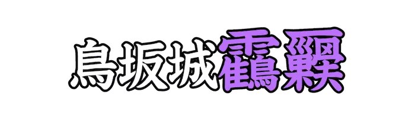 |
つるのすごもり |
歌舞伎、浄瑠璃の外題。 |
| Lv07_0224 |
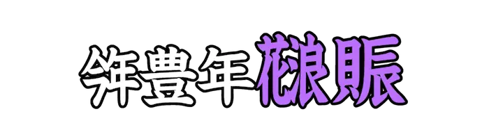 |
なにわのにぎわい |
歌舞伎、浄瑠璃の外題。 |
| Lv07_0225 |
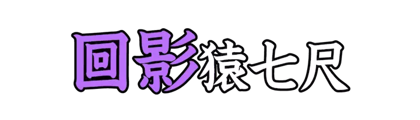 |
しのかげ |
歌舞伎、浄瑠璃の外題。 |
| Lv07_0226 |
 |
ぎゅるてん |
オランダ、ドイツの一部で通用した貨幣の単位。ギルダー。 |
| Lv07_0227 |
|
くんしん |
主君と臣下。君主と臣民。 |
| Lv07_0228 |
|
あさ |
手当たり次第に探すこと。 |
| Lv07_0229 |
|
あろん |
『旧約聖書』のモーセ五書や『クルアーン』に登場する人物。 |
| Lv07_0230 |
|
たけだけ |
勇ましくて強そうである。 |
| Lv07_0231 |
|
は |
雲や霧が消え去る。雨や雪がやむ。 |
| Lv07_0232 |
|
えだなし |
切り取られて、木の枝がないこと。 |
| Lv07_0233 |
|
あくたはら |
ちりやあくた、土や異物を手で払う意とされる。 |
| Lv07_0234 |
|
おびきだ |
だましてさそいだす。 |
| Lv07_0235 |
|
あ |
川で水あみする意とされる。 |
| Lv07_0236 |
|
たちさまよ |
立ってうろうろする。立ってうろつき回る。また、立ったまま先へ進まないでいる。 |
| Lv07_0237 |
|
ともえ |
<鞆|とも>に描かれた、三つの水の渦巻いた形を図案化したもの。 |
| Lv07_0238 |
|
ちからくらべ |
肉体的な力の強さや、学問や技術などの優劣をきそうこと。 |
| Lv07_0239 |
|
やまのふもと |
山の下の方の部分。山すそ。 |
| Lv07_0240 |
|
おおいちざ |
多人数の集団、集会。ふつう、料亭などの一団となった客のことをいう。 |
| Lv07_0241 |
|
さすらえあり |
身を寄せる所も定まった目的もなく、あちこち漂泊する。 |
| Lv07_0242 |
|
みどりご |
生まれて間もない子供。 |
| Lv07_0243 |
|
よこべ |
俵形の器で、一側に口頸部をつけた<須恵器|すえき>のひとつ。 |
| Lv07_0244 |
|
かっぱ |
水陸両生の想像上の動物、妖怪。 |
| Lv07_0245 |
|
やぼてん |
たいそう融通が利かなかったり、情の機微に通じないこと。 |
| Lv07_0246 |
|
のほぎり |
木材や金属、プラスチック材などをひき切るのに用いる工具。 |
| Lv07_0247 |
|
たちがみ |
動物の首筋の長い毛。 |
| Lv07_0248 |
|
すたちすちっく |
『統計学』を意味する語。日本の統計学者の<杉|すぎ><亨二|こうじ>が作ったとされる。 |
| Lv07_0249 |
|
かく |
物の陰になるなどして見えない状態になる。 |
| Lv07_0250 |
|
さえず |
鳥が、玉をころがすように美しく鳴く。 |
| Lv07_0251 |
|
ひかげばしら |
日影の計測のために立てる柱。 |
| Lv07_0252 |
 |
かさねぐつ |
素材を縫い合わせて造られた靴。特に、礼装用のものを指す。 |
| Lv07_0253 |
|
もののけ |
霊や妖怪などの類。特に、中国神話の一本足とされる妖怪を指す。 |
| Lv07_0254 |
|
はなづな |
牛の鼻輪につなぐのに用いるつな。 |
| Lv07_0255 |
|
ひらとばり |
魔除けのために張る<布帛|ふはく>のひとつ。 |
| Lv07_0256 |
|
あつさあたり |
夏の暑さが原因で病気になること。暑気あたり。 |
| Lv07_0257 |
|
ぼうふら |
カの幼虫の俗称。 |
| Lv07_0258 |
|
ほうおう |
中国神話における伝説の鳥、霊鳥。 |
| Lv07_0259 |
|
さいづちまげ |
まげを、小形の木のつちのようにした髪型。 |
| Lv07_0260 |
|
むぎわら |
ムギの穂を取り去った、茎の部分。 |
| Lv07_0261 |
|
くろひつじ |
毛並みの黒い牡羊。 |
| Lv07_0262 |
|
ぶたごや |
豚を飼う小屋。豚舎。 |
| Lv07_0263 |
|
あまりもの |
食べ残したもの。残りもの。 |
| Lv07_0264 |
|
うそぶ |
大きな声でほえる。特に、虎がほえることをいう。 |
| Lv07_0265 |
|
のみほ |
杯をうけて、一滴も残さずに飲む。その状態のまま返杯をしない。 |
| Lv07_0266 |
|
いそ |
祭事を熱心につとめ励む。 |
| Lv07_0267 |
|
へりうむ |
原子番号2の元素。元素記号はHe。 |
| Lv07_0268 |
|
ねおん |
原子番号10の元素。元素記号はNe。 |
| Lv07_0269 |
|
ようそ |
原子番号53の元素。元素記号はI。 |
| Lv07_0270 |
|
ほるみうむ |
原子番号67の元素。元素記号はHo。 |
| Lv07_0271 |
|
すいぎん |
原子番号80の元素。元素記号はHg。 |
| Lv07_0272 |
|
ねんげつ |
年と月の積み重なり。年や月の移り行き。 |
| Lv07_0273 |
|
つきひ |
過ぎていく時間。時日。としつき。 |
| Lv07_0274 |
|
せんてぃえん |
木製の三つの部品からなり、音を鳴らすため古銭が付けられたベトナムの民族楽器。 |
| Lv07_0275 |
|
けんばう |
宮廷音楽の中で用いられてきたとされる、ベトナムの<複簧|ふくこう>管楽器。 |
| Lv07_0276 |
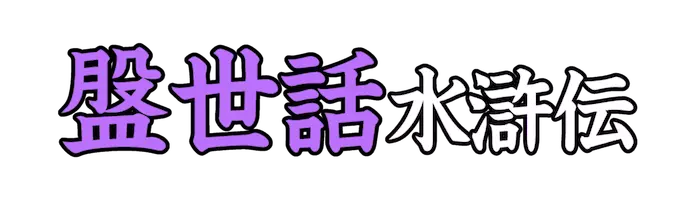 |
じだいせわ |
歌舞伎、浄瑠璃の外題。 |
| Lv07_0277 |
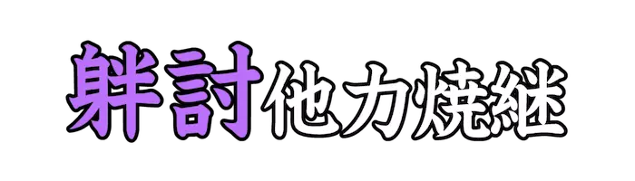 |
かたみうち |
歌舞伎、浄瑠璃の外題。 |
| Lv07_0278 |
|
いちかど |
平安時代、京都七条にあった市に入る門のこと。 |
| Lv07_0279 |
|
しどろもどろ |
話し方が筋立てられず、前後が乱れるさま。 |
| Lv07_0280 |
|
うくつ |
馬に乗って、走り回ったりはね回ること。 |
| Lv07_0281 |
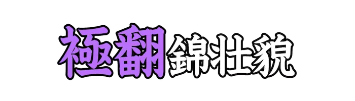 |
きてかえる |
歌舞伎、浄瑠璃の外題。 |
| Lv07_0282 |
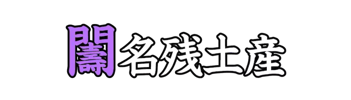 |
かどいでよし |
歌舞伎、浄瑠璃の外題。 |
| Lv07_0283 |
|
はしだて |
京都府北部、日本海の<宮津湾|みやづわん>にある<砂嘴|さし>。『巾』の部分は『日』の誤認とされる。 |
| Lv07_0284 |
 |
あらきばり |
まだ開かれていない荒地をすきかえして、新たに田を開墾すること。 |
| Lv07_0285 |
|
あつつかう |
跡を踏む意とされる。 |
| Lv07_0286 |
|
たなび |
雲やかすみが横に長くかかる。 |
| Lv07_0287 |
|
ふるま |
動作や行動をする。また、無理にしゃべる。 |
| Lv07_0288 |
|
うちかえ |
ひっくり返す。逆にする。 |
| Lv07_0289 |
|
はしたない |
不似合いであったり、どっちつかずである。 |
| Lv07_0290 |
|
なが |
はしからはしまでの隔たりが大きい。 |
| Lv07_0291 |
|
つくりわら |
おかしくもないのに、わざと笑うこと。 |
| Lv07_0292 |
|
ふきながし |
風の方向や強さを確認するための設備。 |
| Lv07_0293 |
|
じがばち |
ハチ目アナバチ科の昆虫。腹柄節の細いくびれが特徴。 |
| Lv07_0294 |
|
さけさかな |
酒と、そのさかな。また、神饌のこと。 |
| Lv07_0295 |
|
かわらなでしこ |
ナデシコ目ナデシコ科の多年草。『<大和撫子|やまとなでしこ>』とも。 |
| Lv07_0296 |
|
こくもつぐら |
米穀を貯えておく蔵。特に、形状の丸いもの。 |
| Lv07_0297 |
|
はねおど |
跳躍して踊ったり、走る。 |
| Lv07_0298 |
|
むらさきそう |
シソ目ムラサキ科の多年草。初夏から夏にかけて白い花を咲かせる。 |
| Lv07_0299 |
 |
おやばね |
強靭な羽のこと。また、猛禽類を指す。 |
| Lv07_0300 |
|
とびあ |
高く飛び立つ。 |
| Lv07_0301 |
|
しわがれごえ |
喉に潤いのない、がさがさした感じの声。 |
| Lv07_0302 |
 |
うっとり |
美しいものなどに心を奪われて見とれる。気抜けする。 |
| Lv07_0303 |
|
きょうかたびら |
仏式の葬儀で、名号や経文、題目などを書き死者に着せるための衣。 |
| Lv07_0304 |
|
からしあえ |
カラシを使用した和え物。 |
| Lv07_0305 |
|
みそかづき |
晦日の西方に見える、とても細い三日月。 |
| Lv07_0306 |
|
ものみべい |
城外を見張るために設けた塀。 |
| Lv07_0307 |
|
あげぼり |
平らな面に、模様や形が浮き出すように彫り上げた彫刻。浮き彫り。 |
| Lv07_0308 |
|
むしまんじゅう |
うどん粉をこねて蒸した菓子。『<麺餑|めんぼつ>』とも。 |
| Lv07_0309 |
|
けしき |
むっとして顔色を変える。また、それらしいようすが現れる。 |
| Lv07_0310 |
|
たちさ |
立ってその場所から去る。 |
| Lv07_0311 |
 |
いしもち |
スズキ目ニベ科の魚。『シログチ』とも。 |
| Lv07_0312 |
|
あしはらかに |
エビ目モクズガニ科のカニ。東アジアの干潟や塩沼に棲息する。 |
| Lv07_0313 |
|
あまびこ |
ヤスデの古名。 |
| Lv07_0314 |
|
たばこ |
ナス目ナス科の一年草および多年草。また、その葉を加工して作られる製品。 |
| Lv07_0315 |
|
こもくさ |
イネ目カヤツリグサ科の多年草。サンカクイの古名。 |
| Lv07_0316 |
|
わらび |
シダ目コバノイシカグマ科のシダ植物。若芽をアク抜きや塩漬けにして食用とする。 |
| Lv07_0317 |
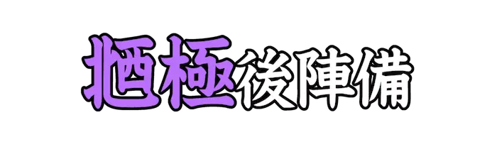 |
ここにきわまる |
歌舞伎、浄瑠璃の外題。 |
| Lv07_0318 |
|
さまりうむ |
原子番号62の元素。元素記号はSm。 |
| Lv07_0319 |
|
だらくま |
重量の単位。オンスの１６分の１。 |
| Lv07_0320 |
|
さかだち |
からだを逆さにして立つこと。 |
| Lv07_0321 |
|
う |
種をまく。 |
| Lv07_0322 |
|
ふ |
下の方に向ける。うつむかせる。また、腹ばいになる。 |
| Lv07_0323 |
|
ただ |
事の是非や事実、真相などを追及する。 |
| Lv07_0324 |
|
とお |
場所や時間などが遥かに離れている。 |
| Lv07_0325 |
|
あ |
事物が存在する。ある事柄がはっきり認められる。 |
| Lv07_0326 |
|
ところ |
空間的な場所。人や物が存在する場所。 |
| Lv07_0327 |
|
よわい |
生まれてから重ねてきた年数。年齢。 |
| Lv07_0328 |
|
まごころ |
偽りや飾りのない心。真剣につくす心。 |
| Lv07_0329 |
|
いぬい |
八卦のひとつ。北西を示す。 |
| Lv07_0330 |
|
かみのすえ |
髪の端の部分。 |
| Lv07_0331 |
|
つっかけ |
足の爪先のほうをひっかけるようにして履く手軽な履物。 |
| Lv07_0332 |
|
しつけうば |
しつけ役の女性。世話役の女性。 |
| Lv07_0333 |
|
くもざる |
サル目クモザル科の動物の総称。 |
| Lv07_0334 |
|
おにやらい |
『<追儺|ついな>』と呼ばれる、疫病を追い払うための儀式のこと。 |
| Lv07_0335 |
|
きょうかたびら |
仏式の葬儀で、名号や経文、題目などを書き死者に着せるための衣。 |
| Lv07_0336 |
|
まつやに |
松の樹幹から分泌される樹脂。 |
| Lv07_0337 |
|
まるきばし |
一本のまるたを渡して、橋としたもの。 |
| Lv07_0338 |
 |
どばし |
橋面に土をかけてならした橋。 |
| Lv07_0339 |
|
こくたん |
カキノキ科の熱帯性常緑高木の総称。 |
| Lv07_0340 |
|
ころがりふ |
横になる。ころがり寝る。 |
| Lv07_0341 |
|
あんちもん |
原子番号51の元素。元素記号はSb。 |
| Lv07_0342 |
|
はしだて |
京都府北部、日本海の<宮津湾|みやづわん>にある、海中に細長く突き出た地形。 |
| Lv07_0343 |
|
そ |
相手から遠くではない位置にあることを表す語。 |
| Lv07_0344 |
|
うかが |
敵や相手の動きをこっそり探る。 |
| Lv07_0345 |
|
なげ |
ひどく悲しむ。悲しんで泣く。 |
| Lv07_0346 |
|
なげ |
ひどく悲しむ。悲しんで泣く。 |
| Lv07_0347 |
|
ふ |
口をすぼめて息を勢いよく出す。また、風が動いて通る。 |
| Lv07_0348 |
|
くにぐに |
あの国、この国。ほうぼうの国。 |
| Lv07_0349 |
|
くしゃみ |
鼻の粘膜が刺激されて起こる、反射的に激しく息を吐き出す生理現象。 |
| Lv07_0350 |
|
ためいき |
落胆や安堵をしたとき、思わず長くはく息。 |
| Lv07_0351 |
|
ひざかけ |
ひざの上にかける、礼装に用いるための布。 |
| Lv07_0352 |
|
ふなしうずら |
チドリ目ミフウズラ科の鳥。ミフウズラの古名。 |
| Lv07_0353 |
|
ははっちょう |
スズメ目ムクドリ科の鳥。ハッカチョウの別名。 |
| Lv07_0354 |
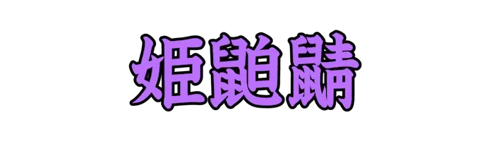 |
ひめじねずみ |
トガリネズミ目トガリネズミ科の動物。トガリネズミの別名。 |
| Lv07_0355 |
|
ゆやなぎ |
ヤナギ目ヤナギ科の落葉低木。ネコヤナギの別名。 |
| Lv07_0356 |
|
びあほい |
ベトナムの生ビールの種類のひとつ。世界で最も安いビールといわれる。 |
| Lv07_0357 |
|
じゃんく |
中国における船舶の様式のひとつ。古く、木造帆船として利用された。 |
| Lv07_0358 |
|
こしぼね |
腰を造りあげている骨。 |
| Lv07_0359 |
|
わか |
年齢が小さい。幼くてあどけない。 |
| Lv07_0360 |
|
さかさまにた |
上下逆に立つ意とされる。 |
| Lv07_0361 |
|
おどろきみ |
びっくりして、きょろきょろする。 |
| Lv07_0362 |
|
くどくど |
非常にくどい。ひどくしつこい。 |
| Lv07_0363 |
|
ひっか |
ある場所に、物が吊り下がる状態にする。 |
| Lv07_0364 |
|
おりたた |
ものを折り曲げて重ね、小さくまとめる。 |
| Lv07_0365 |
|
ぬけげ |
皮膚から抜け落ちた毛髪。 |
| Lv07_0366 |
|
しじゅうから |
スズメ目シジュウカラ科の小鳥。日本を含む東アジアなどに分布する。 |
| Lv07_0367 |
|
ぎぎ |
ナマズ目ギギ科の魚。日本在来のギギ科としては最大。 |
| Lv07_0368 |
|
おうそう |
ゴキブリ目のうちシロアリ以外の総称。広東語の方言漢字による表記。 |
| Lv07_0369 |
|
からかこ |
ナマズ目ギギ科の魚。ギギの別名。 |
| Lv07_0370 |
|
ひお |
アユの稚魚。 |
| Lv07_0371 |
|
たばこ |
ナス目ナス科の一年草および多年草。また、その葉を加工して作られる製品。 |
| Lv07_0372 |
|
さきくさ |
フトモモ目ジンチョウゲ科の落葉低木。ミツマタの別名。 |
| Lv07_0373 |
|
はりぎり |
セリ目ウコギ科の落葉高木。根や樹皮は漢方薬として使われる。 |
| Lv07_0374 |
|
おおえびかずら |
ブドウ目ブドウ科のつる性落葉樹。ブドウの古名。 |
| Lv07_0375 |
|
こやおぎ |
バラ目バラ科の落葉小低木。トキンイバラの別名。 |
| Lv07_0376 |
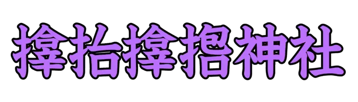 |
さむはらじんじゃ |
大阪府大阪市西区<立売堀|いたちぼり>に位置する神社。『<造化|ぞうか><三神|さんしん>』と総称される神々を祭っている。 |
| Lv07_0377 |
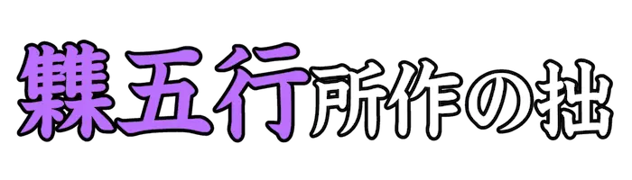 |
よせてごぎょう |
歌舞伎、浄瑠璃の外題。 |
| Lv07_0378 |
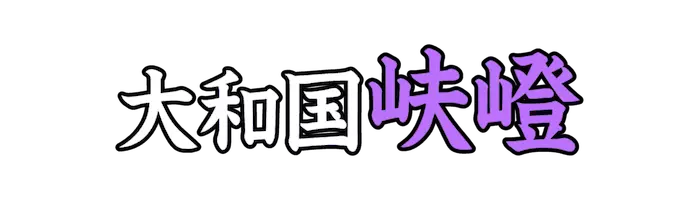 |
めおとざか |
歌舞伎、浄瑠璃の外題。 |
| Lv07_0379 |
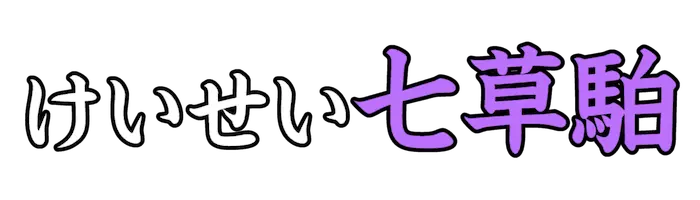 |
なずなのせっく |
歌舞伎、浄瑠璃の外題。 |
| Lv07_0380 |
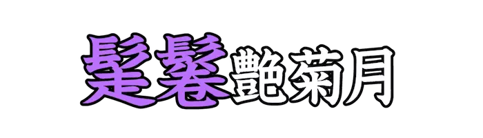 |
いたずらがみ |
歌舞伎、浄瑠璃の外題。 |
| Lv07_0381 |
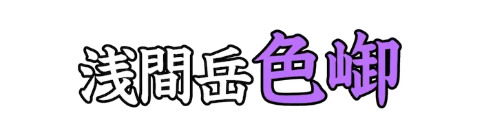 |
いろのやまかぜ |
歌舞伎、浄瑠璃の外題。 |
| Lv07_0382 |
|
じすぷろしうむ |
原子番号66の元素。元素記号はDy。 |
| Lv07_0383 |
 |
るてにうむ |
原子番号44の元素。元素記号はRu。 |
| Lv07_0384 |
|
るびじうむ |
原子番号37の元素。元素記号はRb。 |
| Lv07_0385 |
|
るてちうむ |
原子番号71の元素。元素記号はLu。 |
| Lv07_0386 |
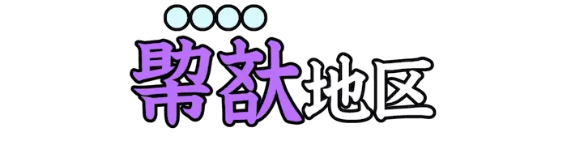 |
ちょろん |
ベトナムのホーチミン市に位置する、ベトナム最大の中華街。 |
| Lv07_0387 |
|
だっぬぅ |
ベトナムで、故国、母国のこと。 |
| Lv07_0388 |
|
ほっとくっとろん |
ベトナムで食べられる、孵化直前のウズラの卵を加熱したゆで卵。 |
| Lv07_0389 |
|
おって |
逃げていく者を捕らえるため追いかける人。 |
| Lv07_0390 |
|
ほまち |
臨時に入る個人的な収入。また、ひそかにたくわえた金。ほまちがね。 |
| Lv07_0391 |
|
にこにこ |
明るくうれしそうな笑顔であるさま。 |
| Lv07_0392 |
|
げんき |
体の調子がよく、健康であること。 |
| Lv07_0393 |
|
うわき |
心がうわついて変わりやすいこと。 |
| Lv07_0394 |
|
なげだし |
放り出された状態になっていること。 |
| Lv07_0395 |
|
ちゅうにん |
仲裁をする人。仲裁人。 |
| Lv07_0396 |
|
しんぼう |
つらいことや苦しいことをがまんすること。こらえ忍ぶこと。 |
| Lv07_0397 |
|
てき |
器用である。また、腕前がすぐれている。 |
| Lv07_0398 |
|
よくば |
何でもほしがり求めようとする。欲深く振る舞う。 |
| Lv07_0399 |
|
つきあ |
進んで行ってものに勢いよく当たる。衝突する。 |
| Lv07_0400 |
 |
さんぼうこうじん |
仏、法、僧の三宝を守護するという神。三面<六臂|ろっぴ>で、怒りの形相を示す。 |
| Lv07_0401 |
|
ぜに |
金属製の貨幣。おかね。『銭』の略表記。 |
| Lv07_0402 |
|
ふつつか |
気のきかないさま。行きとどかないさま。また、太くて丈夫なさま。 |
| Lv07_0403 |
|
みずぐるま |
刀や槍を振り回すこと。また、激しく敵に襲いかかるようす。 |
| Lv07_0404 |
|
あらし |
荒く激しく吹く風。 |
| Lv07_0405 |
|
くらぼね |
馬の背に身体を固定させる装置。 |
| Lv07_0406 |
|
ひしお |
大豆と小麦で作ったこうじに食塩水をまぜて造る、味噌に似た食品。 |
| Lv07_0407 |
|
おくば |
口の奥のほうにある歯。 |
| Lv07_0408 |
|
しらかす |
白酒や甘酒を作るのに用いる、白い酒かす。 |
| Lv07_0409 |
|
むらさめ |
突然激しく降る、強い雨。にわかあめ。 |
| Lv07_0410 |
|
ひじかさあめ |
突然激しく降る、強い雨。にわかあめ。特に、肘で凌がざるをえないほどの雨。 |
| Lv07_0411 |
|
あまつび |
空から降ってくる、粒である状態の雨。『雨粒』の意とされる。 |
| Lv07_0412 |
|
ふぶき |
雪が激しい風に吹かれ、乱れ飛びながら降っていること。 |
| Lv07_0413 |
|
かえりみ |
後ろや過去を振り返ってみること。 |
| Lv07_0414 |
|
うつぼ |
中がからっぽであること。うつろ。 |
| Lv07_0415 |
|
すみざし |
大工道具のひとつで、墨壺を用いて木材に線を引くための竹筆。 |
| Lv07_0416 |
|
すみつぼ |
大工道具のひとつ。材木に直線を引いたり、建築で基準となる墨を引くために使う。 |
| Lv07_0417 |
|
あおだ |
竹や木で編んだ、覆いのない粗末な釣り<輿|ごし>。 |
| Lv07_0418 |
|
きせる |
日本の刻みたばこ用の喫煙具。 |
| Lv07_0419 |
|
せなかのほね |
背中に位置する骨。 |
| Lv07_0420 |
|
あしのごい |
足の汚れをぬぐう布のこと。 |
| Lv07_0421 |
 |
ぬかば |
上顎の前歯のこと。 |
| Lv07_0422 |
|
つばさ |
鳥や飛行機などの、飛行するためのはね。 |
| Lv07_0423 |
|
やきば |
やいばのこと。焼き入れをして鍛えた刃。 |
| Lv07_0424 |
|
あからさま |
ありのままに表すさま。露骨なさま。 |
| Lv07_0425 |
|
うでまくり |
袖をたくし上げて、後ろで結ぶこと。 |
| Lv07_0426 |
|
たまだすき |
袖をたくし上げて、後ろで結ぶこと。 |
| Lv07_0427 |
|
さもあらばあれ |
不本意ながら容認する気持ちを表わす語。どうともなるがよい。ままよ。 |
| Lv07_0428 |
|
おもわく |
あらかじめ考えていた事柄。考え。意図。 |
| Lv07_0429 |
|
さいつとし |
過ぎ去った年。前年。 |
| Lv07_0430 |
|
ふなやかた |
船上に設けた、屋根付きの部屋。 |
| Lv07_0431 |
|
さきおととし |
おととしの前の年。三年前の年。 |
| Lv07_0432 |
|
とぼそ |
開き戸の梁と敷居に開けた、小さな穴。 |
| Lv07_0433 |
|
かすがい |
材木同士をつなぎとめるために打ち込む、両端の曲がった大釘。 |
| Lv07_0434 |
|
とじきみ |
門や部屋の戸などの下に、仕切りとして敷き渡した横木。 |
| Lv07_0435 |
|
たかばかり |
裁縫に用いる、竹製のものさし。 |
| Lv07_0436 |
|
しゃぐま |
払子やかつら、兜の飾りに用いる赤い毛。また、縮れ毛で作った入れ髪。 |
| Lv07_0437 |
|
もちづき |
陰暦十五夜の月。満月。 |
| Lv07_0438 |
|
たぶさ |
髪を頭上に集めて束ねた部分の意とされる。 |
| Lv07_0439 |
|
はらから |
同じ腹から生まれた、兄弟姉妹。また、同じ国土に生まれた人々。 |
| Lv07_0440 |
|
わげ |
<上方|かみがた>で、まげを指す語。 |
| Lv07_0441 |
|
ふゆげ |
鳥獣の、冬にみられる毛衣の意とされる。 |
| Lv07_0442 |
|
すりこ |
米をすりくだいて粉にしたもの。湯で溶いたものを乳の代用で赤子に与えた。 |
| Lv07_0443 |
 |
やまい |
病気。わずらい。 |
| Lv07_0444 |
|
ほとけ |
悟りを得た者。<仏陀|ぶっだ>。また、仏像や死者を指す。 |
| Lv07_0445 |
|
なんじ |
文語の第二人称代名詞。おまえ。 |
| Lv07_0446 |
|
ひつぎ |
遺体を納めて葬るための容器。 |
| Lv07_0447 |
|
ひじ |
うでの関節の、外側の部分。かいな。また、たのみとするもの。 |
| Lv07_0448 |
|
とら |
とろけさせる。 |
| Lv07_0449 |
|
たい |
高低や起伏がないさま。また、落ち着いていて静かなさま。 |
| Lv07_0450 |
|
ことほ |
お祝いや、喜びの言葉を言う。 |
| Lv07_0451 |
|
かきみ |
水を掻いて回る意とされる。 |
| Lv07_0452 |
|
はなひ |
くしゃみをする。 |
| Lv07_0453 |
|
もだ |
非常に思い悩む。気絶しそうになるほど苦しむ。 |
| Lv07_0454 |
|
さが |
険阻である。山や坂が険しい。 |
| Lv07_0455 |
|
なだ |
滑らかである。角だっていない。 |
| Lv07_0456 |
|
くつろ |
伸び伸びとする。心身をゆったりと休める。 |
| Lv07_0457 |
|
や |
追い払うこと。 |
| Lv07_0458 |
|
こぼ |
液体や粉末、粒状の物などが容器などから外へ出る。すきまなどから漏れ落ちる。 |
| Lv07_0459 |
|
おしまろ |
押し倒す。押して転倒させる。 |
| Lv07_0460 |
|
ころ |
重心を失って倒れる。転倒する。 |
| Lv07_0461 |
|
こしから |
衣を腰のあたりに巻きつける。 |
| Lv07_0462 |
|
のぞ |
隙間から見たり、身をのり出して見る意とされる。 |
| Lv07_0463 |
|
けだか |
すぐれて上品に見える。また、高貴である。 |
| Lv07_0464 |
|
むさぼ |
飽きることなくほしがったり、際限なくある行為を続ける意とされる。 |
| Lv07_0465 |
|
うちわた |
仕掛けたり、打ち並べる意とされる。 |
| Lv07_0466 |
|
ふくつけ |
欲が深い。貪欲である。 |
| Lv07_0467 |
|
ふくつけ |
欲が深い。貪欲である。 |
| Lv07_0468 |
|
おしはさ |
押しつけて挟む。 |
| Lv07_0469 |
|
いさぎよ |
事物、風景などが清らかである。また、思い切りがよい。潔白である。 |
| Lv07_0470 |
|
はりひら |
山林や原野を切り開いて、耕地にする。開墾する。 |
| Lv07_0471 |
|
つと |
心をふるいおこす。精を出す。 |
| Lv07_0472 |
|
おぼつかな |
物事の成り行きが疑わしい。うまくいきそうもない。 |
| Lv07_0473 |
|
つたき |
ずたずたに切る。切れ切れにする。 |
| Lv07_0474 |
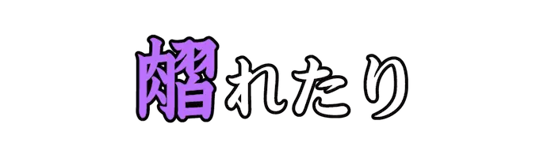 |
あざ |
肉などが腐った。腐敗した。 |
| Lv07_0475 |
|
こ |
通り過ぎたり、向こう側へ行く。 |
| Lv07_0476 |
 |
かみそ |
髪をそる。剃髪をする。 |
| Lv07_0477 |
|
た |
横たわったり、座った状態から起きあがる。 |
| Lv07_0478 |
|
むさぼ |
ひどくほしがる。渇望する。 |
| Lv07_0479 |
|
ふ |
老いる。年をとる。 |
| Lv07_0480 |
 |
さら |
水や薬品などにつける。 |
| Lv07_0481 |
 |
よ |
じゅうぶんに。 |
| Lv07_0482 |
|
もう |
『言う』の丁寧語。主として会話に用い、聞き手に対して使う。 |
| Lv07_0483 |
|
とどこお |
はじめから。元来。また、言うまでもなく。 |
| Lv07_0484 |
|
わざわ |
人に不幸をもたらす物事。災難。 |
| Lv07_0485 |
|
はや |
動作、進行などがすみやかである。 |
| Lv07_0486 |
|
およ |
ある所や時、状態などに達する。 |
| Lv07_0487 |
|
お |
おしのける。おとしいれる。 |
| Lv07_0488 |
|
お |
据える。おちつかせる。 |
| Lv07_0489 |
|
うるわ |
気品があって美しい。 |
| Lv07_0490 |
|
かつ |
物を持ち上げて肩にのせ支える。 |
| Lv07_0491 |
|
うら |
不平に思う。 |
| Lv07_0492 |
|
すわ |
ひざを折り曲げて、物の上に腰を下ろす。 |
| Lv07_0493 |
|
あた |
自分の所有物を他の人に渡す。恩恵的な意味で、目下の者に授ける。 |
| Lv07_0494 |
|
つか |
体力や気力を消耗し、その働きが衰える。くたびれる。 |
| Lv07_0495 |
|
ねむ |
眠りを欲している状態である。 |
| Lv07_0496 |
|
ひれふす |
頭が地に着くほど身を低くする。 |
| Lv07_0497 |
|
ひそめき |
眉をひそめる意とされる。 |
| Lv07_0498 |
|
おもはかる |
思いやったり、配慮する意とされる。 |
| Lv07_0499 |
|
さけのもと |
日本酒を作るもと。酒母。 |
| Lv07_0500 |
 |
ぶりぶり |
弓術にまつわる国書のこと。同名の、綱で吊り下げる的の名から来ているとされる。 |
{kind=link}
{kind=link}
{kind=link}
{kind=link}

{kind=link}
{kind=link}
{kind=link}
{kind=link}
{kind=link}
{kind=link}
{kind=link}
{kind=link}
{kind=link}
{kind=link}
{kind=link}
{kind=link}
{kind=link}
{kind=link}
{kind=link}
{kind=link}
{kind=link}
{kind=link}
{kind=link}
{kind=link}
{kind=link}
{kind=link}
{kind=link}
{kind=link}
{kind=link}
{kind=link}
{kind=link}
{kind=link}
{kind=link}
{kind=link}
{kind=link}
{kind=link}
{kind=link}
{kind=link}
{kind=link}
{kind=link}
{kind=link}
{kind=link}
{kind=link}
{kind=link}
{kind=link}
{kind=link}
{kind=link}
{kind=link}
{kind=link}
{kind=link}
{kind=link}
{kind=link}
{kind=link}
{kind=link}
{kind=link}
{kind=link}
{kind=link}
{kind=link}
{kind=link}
{kind=link}
{kind=link}

{kind=link}
{kind=link}
{kind=link}
{kind=link}
{kind=link}
{kind=link}
{kind=link}
{kind=link}
{kind=link}
{kind=link}
{kind=link}
{kind=link}
{kind=link}
{kind=link}
{kind=link}
{kind=link}
{kind=link}
{kind=link}
{kind=link}
{kind=link}
{kind=link}
{kind=link}
{kind=link}
{kind=link}
{kind=link}
{kind=link}
{kind=link}
{kind=link}
{kind=link}
{kind=link}
{kind=link}
{kind=link}
{kind=link}
{kind=link}
{kind=link}
{kind=link}
{kind=link}
{kind=link}
{kind=link}
{kind=link}
{kind=link}
{kind=link}
{kind=link}
{kind=link}
{kind=link}
{kind=link}
{kind=link}
{kind=link}
{kind=link}
{kind=link}
{kind=link}
{kind=link}
{kind=link}
{kind=link}
{kind=link}
{kind=link}
{kind=link}

{kind=link}
{kind=link}

{kind=link}
{kind=link}
{kind=link}
{kind=link}
{kind=link}
{kind=link}
{kind=link}
{kind=link}
{kind=link}
{kind=link}
{kind=link}
{kind=link}

{kind=link}
{kind=link}
{kind=link}
{kind=link}
{kind=link}
{kind=link}
{kind=link}
{kind=link}
{kind=link}
{kind=link}
{kind=link}
{kind=link}
{kind=link}
{kind=link}
{kind=link}
{kind=link}
{kind=link}
{kind=link}
{kind=link}
{kind=link}
{kind=link}
{kind=link}
{kind=link}
{kind=link}
{kind=link}
{kind=link}
{kind=link}
{kind=link}
{kind=link}
{kind=link}
{kind=link}
{kind=link}
{kind=link}
{kind=link}
{kind=link}
{kind=link}
{kind=link}
{kind=link}
{kind=link}
{kind=link}
{kind=link}
{kind=link}
{kind=link}
{kind=link}
{kind=link}
{kind=link}
{kind=link}
{kind=link}
{kind=link}
{kind=link}
{kind=link}
{kind=link}
{kind=link}
{kind=link}
{kind=link}
{kind=link}
{kind=link}
{kind=link}
{kind=link}
{kind=link}
{kind=link}
{kind=link}
{kind=link}
{kind=link}
{kind=link}
{kind=link}
{kind=link}
{kind=link}
{kind=link}
{kind=link}
{kind=link}
{kind=link}
{kind=link}
{kind=link}
{kind=link}
{kind=link}
{kind=link}
{kind=link}
{kind=link}
{kind=link}
{kind=link}
{kind=link}
{kind=link}
{kind=link}

{kind=link}
{kind=link}
{kind=link}

{kind=link}
{kind=link}
{kind=link}
{kind=link}
{kind=link}
{kind=link}
{kind=link}
{kind=link}
{kind=link}
{kind=link}
{kind=link}
{kind=link}
{kind=link}
{kind=link}
{kind=link}
{kind=link}
{kind=link}
{kind=link}
{kind=link}
{kind=link}
{kind=link}
{kind=link}
{kind=link}
{kind=link}
{kind=link}

{kind=link}
{kind=link}
{kind=link}
{kind=link}
{kind=link}
{kind=link}
{kind=link}
{kind=link}
{kind=link}
{kind=link}
{kind=link}
{kind=link}
{kind=link}
{kind=link}
{kind=link}
{kind=link}
{kind=link}
{kind=link}
{kind=link}
{kind=link}
{kind=link}
{kind=link}
{kind=link}
{kind=link}
{kind=link}
{kind=link}
{kind=link}
{kind=link}
{kind=link}
{kind=link}
{kind=link}

{kind=link}
{kind=link}
{kind=link}
{kind=link}
{kind=link}
{kind=link}
{kind=link}
{kind=link}
{kind=link}
{kind=link}
{kind=link}
{kind=link}
{kind=link}
{kind=link}

{kind=link}
{kind=link}

{kind=link}
{kind=link}
{kind=link}
{kind=link}
{kind=link}
{kind=link}
{kind=link}
{kind=link}

{kind=link}
{kind=link}
{kind=link}
{kind=link}
{kind=link}
{kind=link}
{kind=link}
{kind=link}
{kind=link}
{kind=link}
{kind=link}
{kind=link}
{kind=link}
{kind=link}
{kind=link}
{kind=link}
{kind=link}
{kind=link}
{kind=link}
{kind=link}
{kind=link}
{kind=link}
{kind=link}
{kind=link}
{kind=link}
{kind=link}

{kind=link}
{kind=link}
{kind=link}
{kind=link}
{kind=link}
{kind=link}
{kind=link}
{kind=link}
{kind=link}
{kind=link}
{kind=link}
{kind=link}
{kind=link}
{kind=link}
{kind=link}
{kind=link}
{kind=link}
{kind=link}
{kind=link}
{kind=link}
{kind=link}
{kind=link}
{kind=link}
{kind=link}
{kind=link}
{kind=link}
{kind=link}
{kind=link}
{kind=link}
{kind=link}
{kind=link}
{kind=link}
{kind=link}
{kind=link}
{kind=link}
{kind=link}
{kind=link}
{kind=link}
{kind=link}
{kind=link}
{kind=link}
{kind=link}
{kind=link}
{kind=link}

{kind=link}
{kind=link}
{kind=link}
{kind=link}
{kind=link}
{kind=link}
{kind=link}
{kind=link}
{kind=link}
{kind=link}
{kind=link}
{kind=link}
{kind=link}
{kind=link}
{kind=link}
{kind=link}

{kind=link}
{kind=link}
{kind=link}
{kind=link}
{kind=link}
{kind=link}
{kind=link}
{kind=link}
{kind=link}
{kind=link}
{kind=link}
{kind=link}
{kind=link}
{kind=link}
{kind=link}
{kind=link}
{kind=link}
{kind=link}
{kind=link}
{kind=link}

{kind=link}
{kind=link}
{kind=link}
{kind=link}
{kind=link}
{kind=link}
{kind=link}
{kind=link}
{kind=link}
{kind=link}
{kind=link}
{kind=link}
{kind=link}
{kind=link}
{kind=link}
{kind=link}
{kind=link}
{kind=link}
{kind=link}
{kind=link}
{kind=link}

{kind=link}
{kind=link}
{kind=link}
{kind=link}
{kind=link}
{kind=link}
{kind=link}
{kind=link}
{kind=link}
{kind=link}
{kind=link}
{kind=link}
{kind=link}
{kind=link}
{kind=link}
{kind=link}
{kind=link}
{kind=link}
{kind=link}
{kind=link}
{kind=link}
{kind=link}
{kind=link}
{kind=link}
{kind=link}
{kind=link}
{kind=link}
{kind=link}
{kind=link}
{kind=link}
{kind=link}
{kind=link}

{kind=link}
{kind=link}
{kind=link}


{kind=link}
{kind=link}
{kind=link}
{kind=link}
{kind=link}
{kind=link}
{kind=link}
{kind=link}
{kind=link}
{kind=link}
{kind=link}
{kind=link}
{kind=link}
{kind=link}
{kind=link}
{kind=link}
{kind=link}
{kind=link}